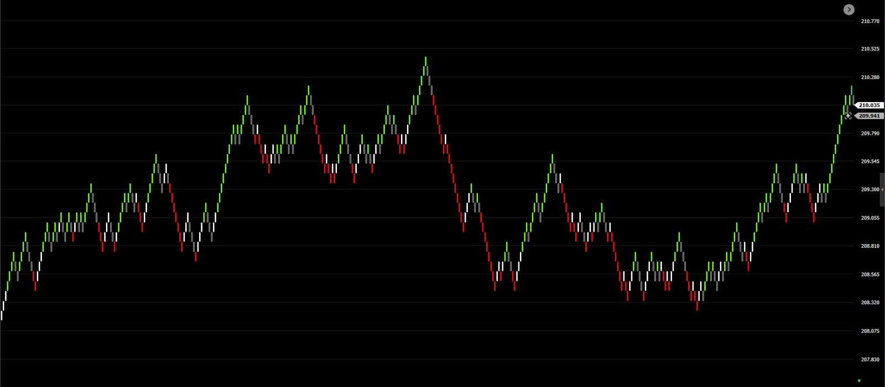

Início › Indicadores › OG_COL_001
OG_COL_001
Coloração de tendência que pinta o gráfico de verde ou vermelho apenas quando três médias concordam sobre a direção do preço.
Como ler as cores
A coloração só se compromete com uma direção quando há concordância. Quando não há, ela se cala — e isso também é informação.
Verde
As três médias apontam para cima: movimento de alta em curso.
Vermelho
As três médias apontam para baixo: movimento de queda em curso.
Sem cor
As médias divergem: lateralidade ou transição. O candle mantém a cor padrão do gráfico.

Onde usar
- Renko e tempo gráfico (como 5 minutos).
- Mini dólar (WDO) e mini índice (WIN).
- Ajuste automático ao tamanho do tick do ativo.
Funciona como camada de leitura: combine-a com o seu próprio critério de entrada, saída e gestão de risco.
Como foi desenvolvida
A OG_COL_001 foi calibrada com dados reais de negociação do mini dólar e do mini índice, reconstruindo os gráficos negócio a negócio, da mesma forma que o Profit os desenha. A versão publicada foi validada em duas metades independentes do histórico e, depois, em pregões novos, que não participaram da calibração.
Os testes medem a qualidade da leitura — se a cor acompanha a direção real do movimento, quantas vezes troca sem necessidade e com que rapidez reconhece uma virada. Uma boa leitura não equivale, por si só, a operações lucrativas: o resultado depende das regras e da gestão de quem opera.
Aviso. A OG_COL_001 é uma ferramenta de apoio à análise. Não emite recomendação de compra ou venda, e resultados passados não garantem resultados futuros.
Onde adquirir
Disponível na loja oficial da Nelogica:
https://nelogica.com.br/mercado-de-estrategias?id=23473
Dúvidas sobre instalação e uso: grupo Onkel Geld na comunidade Connect da Nelogica.